Kernel Mode Driver Framework
WHQL測試流程
參考資訊：
1. windows-hlk-getting-started
2. evaluate-hyper-v-server-2012
3. evaluate-hyper-v-server-2016
4. How-to-use-Hyper-V-under-Windows-10-Wi-Fi-and-DHCP
司徒依稀記得第一次測試WHQL大約是在2003年左右，當初使用的測試方式是，準備兩台雙核CPU的電腦，然後使用網路連接測試，一台是Controller主機，另一台則是Client主機，每測試完一個系統後，就會使用Ghost開機光碟，將Client主機倒回其它測試系統，就這樣把需要測試的系統全部測完，測試的時間也很長，一個系統大約需要一天的測試時間，過程遇到錯誤，一般都是使用Rerun或者上Patch解決，印象最深刻的，還是費用高昂這件事情，難怪MS一般都會被縮寫成M$，也不是沒有道理的！
如今司徒剛好又有那樣的機緣，可以跑WHQL測試流程，就順便紀錄下整個安裝以及測試過程，以供日後參考使用，目前使用的機器已經是很高檔的Dell R640機器(CPU:24核心，RAM:128GB, DISK:1TB)，而且最方便的是，可以透過Hyper-V做虛擬機測試(不建議使用VirtualBox、VMware)，因此，整體測試就可以單純許多。
司徒使用Windows Server 2019當作主力系統並且啟動Hyper-V服務，然後把Controller、Client系統都安裝在Hyper-V
PS > Enable-WindowsOptionalFeature -Online -FeatureName Microsoft-Hyper-V-Tools-All
HLK、HCK安裝建議
| Controller | Client | |
|---|---|---|
| HCK | Windows Server 2012 |
Windows 7 Windows 8 Windows 8.1 Windows Server 2008 R2 Windows Server 2012 Windows Server 2012 R2 |
| HLK | (HLK v2004) Windows Server 2016 |
(HLK v2004) Windows 10 20H2 (HLK v2004) Windows 10 2004 (HLK v1903) Windows 10 1909 (HLK v1903) Windows 10 1903 (HLK v1809) Windows 10 1809 (HLK v1809) Windows Server 2019 (HLK v1803) Windows 10 1803 (HLK v1709) Windows 10 1709 (HLK v1703) Windows 10 1703 (HLK v1607) Windows 10 1607 (HLK v1607) Windows 10 1511 (HLK v1607) Windows 10 1507 (HLK v1607) Windows Server 2016 |
P.S. Windows XP、Windows 2000、Windows Vista這三個系統，目前不需要跑WHQL測試，在Submission時，就可以勾選
接著需要先設定Hyper-V NAT網卡，只要新增一張connection type是Internal network網卡，名稱可以隨意取名
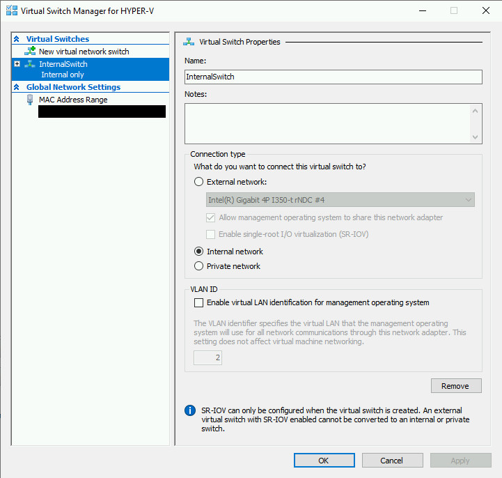
接著就可以看到新增的網卡
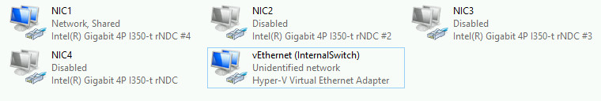
接著將原本的主要網卡(如：NIC1)，設定成可以分享
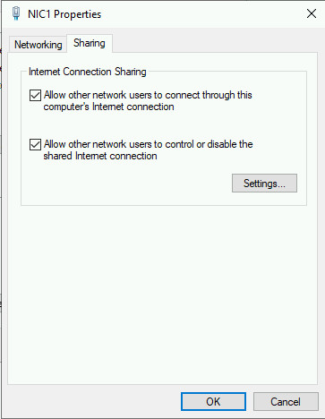
Hyper-V NAT網卡自動配置的IP
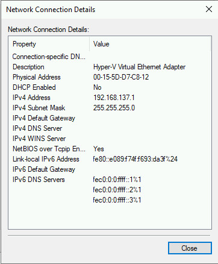
接著透過Hyper-V先安裝Controller系統：
1. 建議RAM 2GB、DISK 60GB
2. 關閉Windows Firewall
3. 關閉Windows AntiVirus
4. 關閉Windows Defender
5. 開啟網路芳鄰(SMB Service)
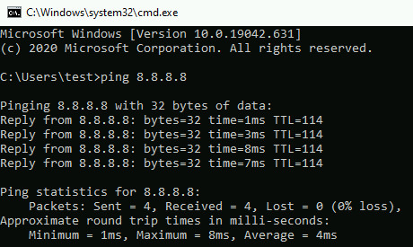
P.S. 如果遇到Hyper-V NAT網卡無法連網，可以交互Enable、Disable原本網卡(NIC1)以及Hyper-V NAT網卡，如果還是不行，可以重新建立Hyper-V NAT網卡，多測試幾次即可，因為Hyper-V的網路真是不敢領教...
接著安裝HLK或者HCK(依照測試選項)
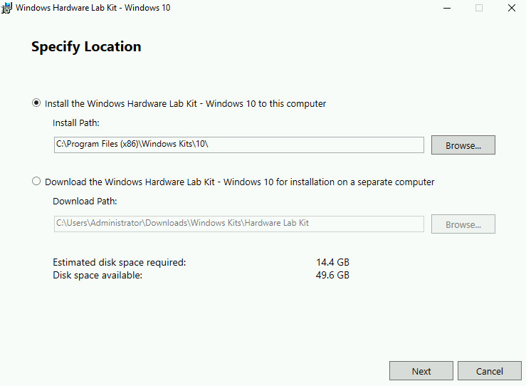
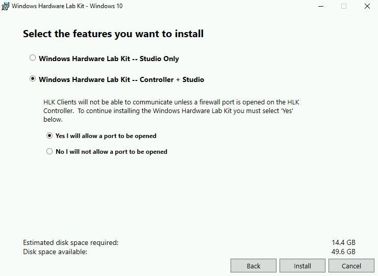
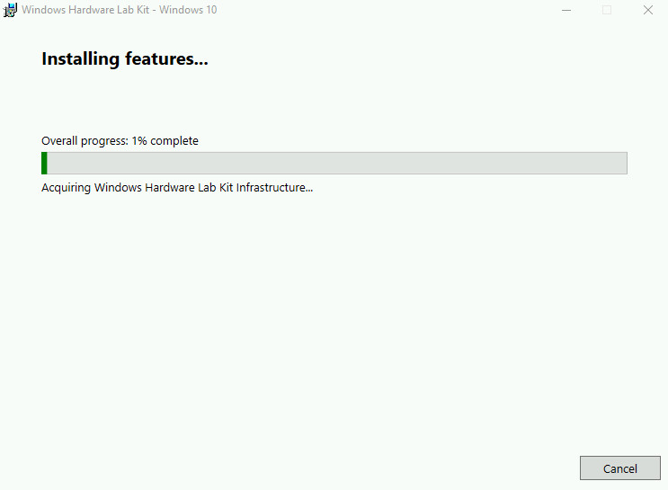
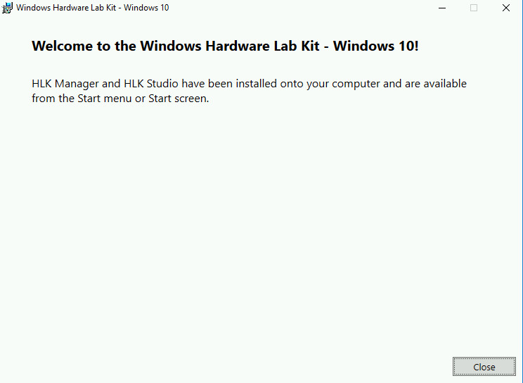
接著安裝Client系統：
1. 建議RAM 2GB、DISK 60GB
2. 關閉Windows Firewall
3. 關閉Windows AntiVirus
4. 關閉Windows Defender
5. 開啟網路芳鄰(SMB Service)
6. 開啟遠端連線功能(Remote Desktop Connection)
7. 關閉UAC(User Account Control Settings > Never notify)
8. 開啟BCD設定並且重新開機
c:\> bcdedit.exe /set TESTSIGNING ON c:\> bcdedit.exe /set bootstatuspolicy ignoreallfailures c:\> bcdedit.exe /set bootmenupolicy legacy
9. 掛載需要的檔案系統(FSFilter Driver測試需要，可以使用fltmc指令查看是否為FSFilter Driver)
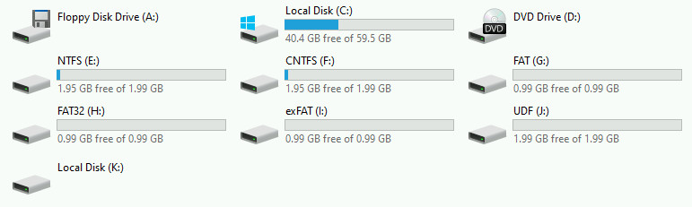
10. 安裝測試的驅動程式，啟動TYPE設定成SERVICE_AUTO_START，由於BCD已經開啟TESTSIGNING，因此，驅動程式只需要有一個簡單的測試簽章即可安裝使用，如何製作個人測試簽章，請參考這裡
接著在Client安裝HLK或者HCK，安裝的方式則是透過Controller的網路芳鄰資料夾(HLKInstall > Client > Setup.cmd)
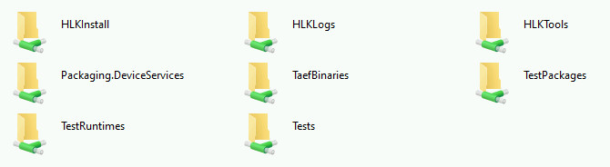
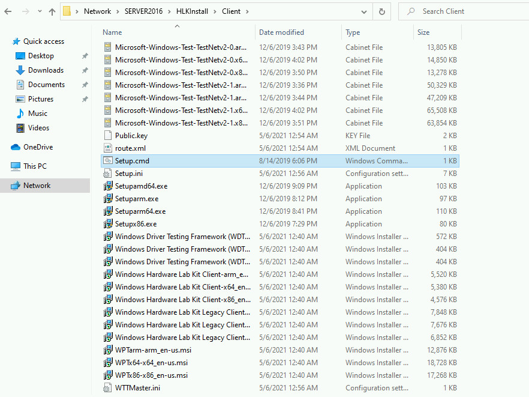
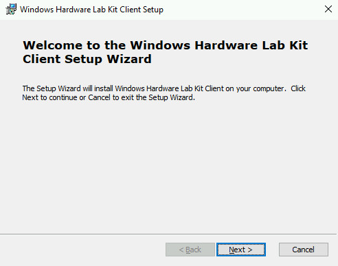
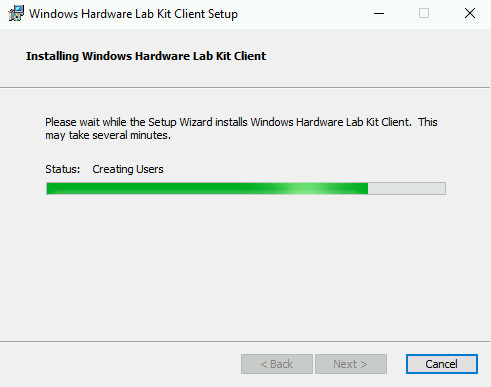
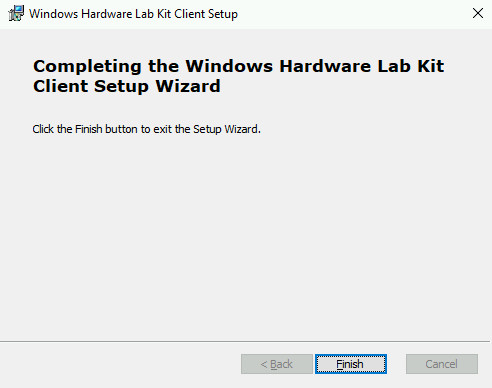
P.S. 完成後，重新開機即可
接著在Controller開啟HLK Studio
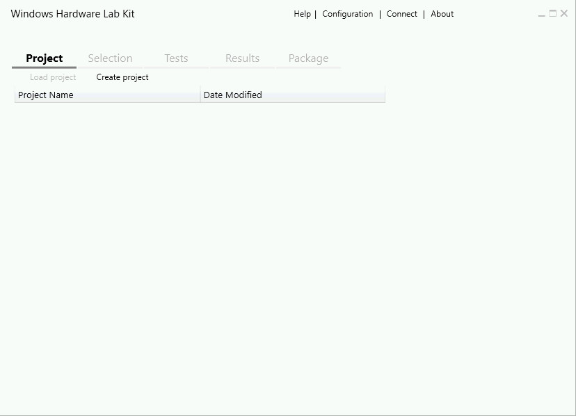
選擇Configuration
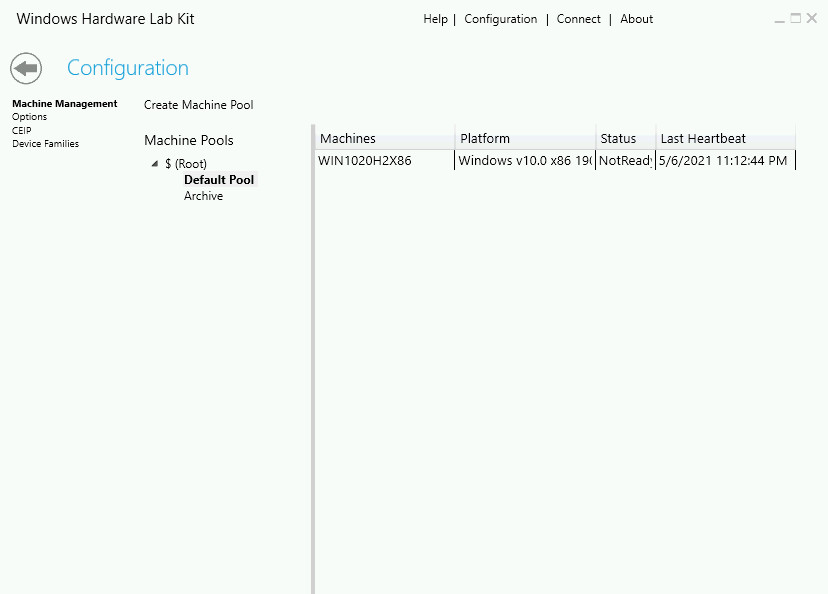
Create Machine Pool
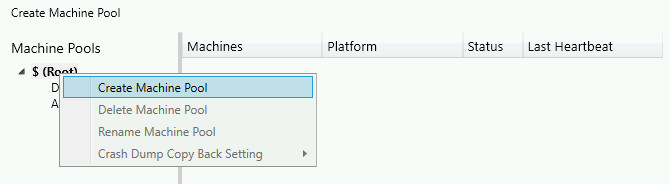
接著把Default Pool的測試機器拉到新增的Pool裡面
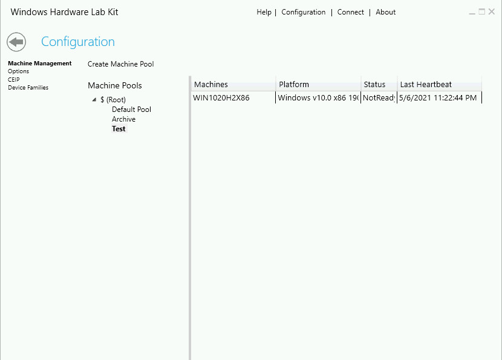
接著按滑鼠右鍵，設定成Ready
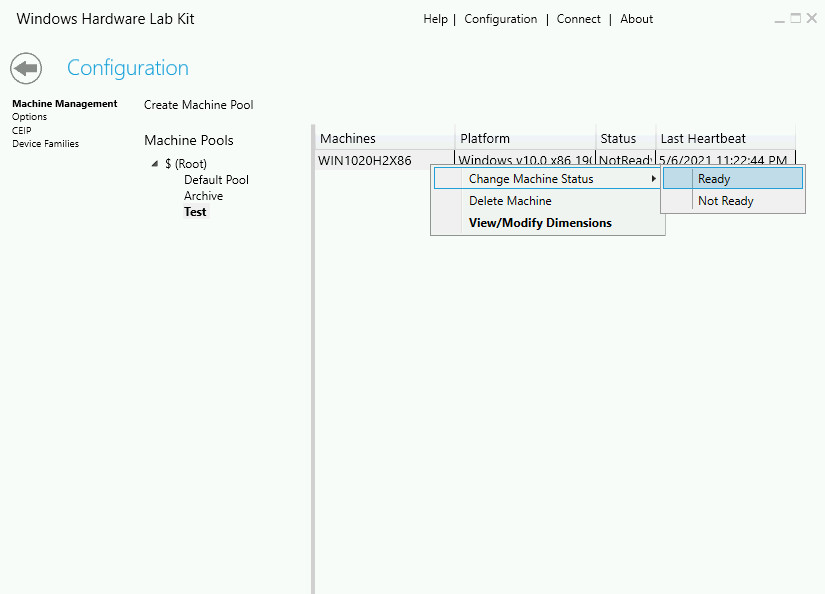
接著返回主頁，然後Create Project
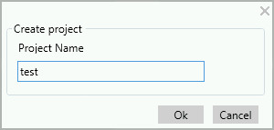
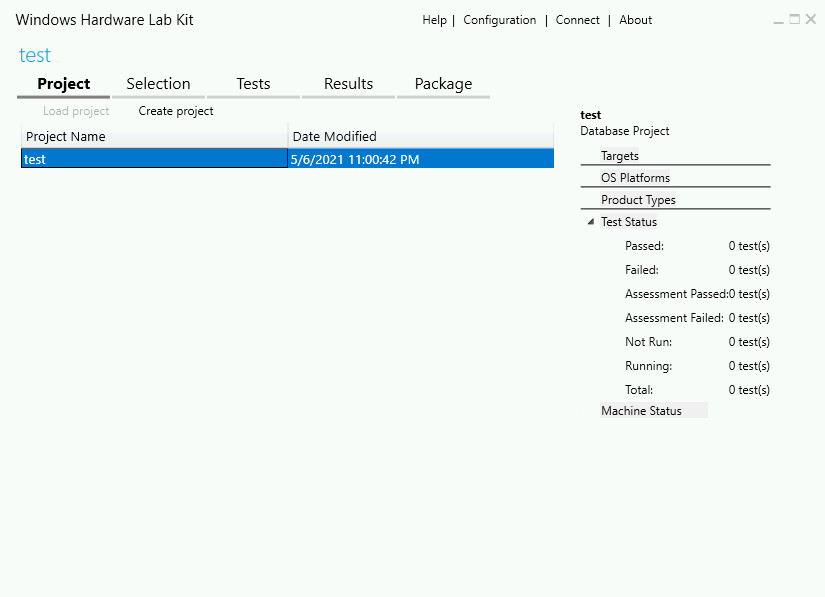
切到Selection頁面，並且選擇剛剛新增的Pool
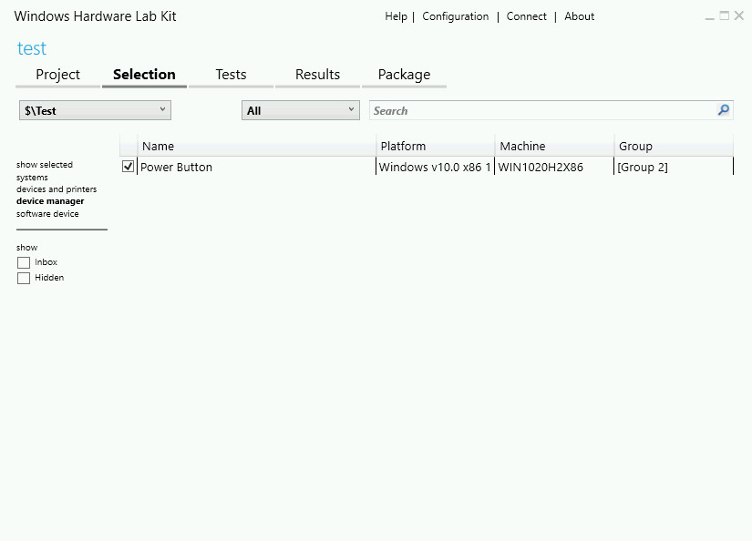